01 互联网消费金融高并发架构设计体系的设计原则
互联网消费金融架构的特性
近年来互联网金融蓬勃发展，在借贷、保险、股权等领域涌现出一大批互联网与金融场景相结合的创新产品。同时作为互联网金融的子领域消费金融领域，在国家消费升级战略下，各大平台推出了如花呗、借呗，微粒贷等众多服务。
根据第三方机构预统计，自2016年-2019年，我国零售信贷规模维持20%以上的高复合增长率，2017年中国零售信贷规模达到27万亿，到2019年，总规模超过37万亿。
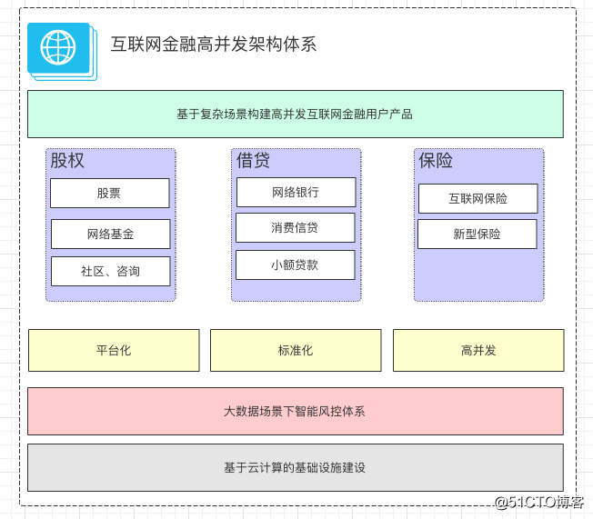
互联网金融的架构有别于传统金融系统，互联网金融产品依托于互联网的众多技术特性，主要包括三大主要方面：
1）互联网高并发软件平台化特性 2）基于大数据的场景的智能化风控体系 3）基于高弹性的云计算基础设施建设
在互联网浪潮的背景下，传统银行、金融行业也有着转型的诉求，并在股权、借贷、保险等方面都需要创新。有些是业务从线下转线上，有些是金融零售化转型。随着互联网金融业务的爆发增长，建设一个高并发、高可用、高弹性的互金平台是每个金融从业的IT技术人员面临的挑战。
互联网消费金融高并发架构面临的挑战
在传统金融的领域里，架构的特点往往是保守的，除了技术相对陈旧以外，更多是要求系统更高的稳定性，低风险，低维护等。 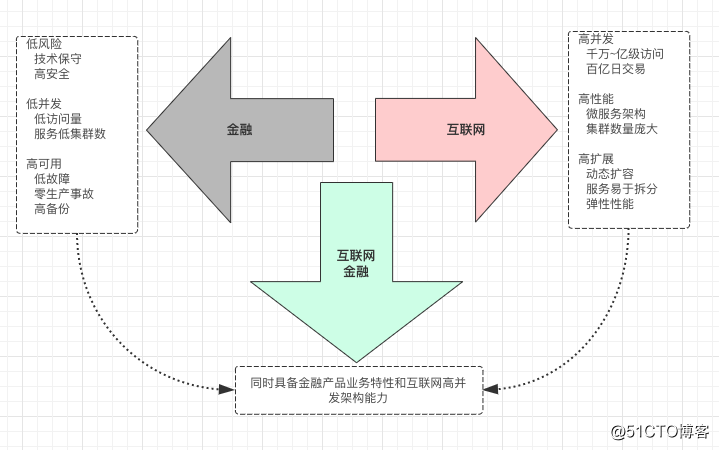
银行、金融机构在面对互联网化的高速业务发展，往往会陷入技术与基础建设的泥潭，一方面在软件平台建设时银行、金融传统系统的高可用、低风险、低风险特性与互联网产品的高并发、高性能、高扩展/高弹性存在一定的冲突，另一方面在基础设施建设方面，相比互联网的云计算平台，存在天然的先天不足。
所以，我们的架构设计，需要结合两者的特性，综合考虑，既要兼顾传统金融行业的特性，又要承载互联网高并发高弹性等特性，这样使我们面临到巨大的挑战：
1）对于架构师来说，前期的技术架构设计和领域规划，需要同时具备对传统金融领域知识和互联网高并发架构的双重能力；
2）对于研发、测试、运维人员来说，系统的复杂度成倍的增长，微服务拆分后，系统研发、测试、运维难度大大增加；
3）当出现线上问题时，排查问题和分析错误，也变得复杂，需要依赖庞大的监控体系和log分析工具。
如何在构建一个高并发互联网架构的基础上，同时兼顾金融行业的特性，让金融IT技术从业者面临着巨大的挑战。而且金融行业的高安全、银保监会监管合规方面的要求，也让高并发的互联网架构在实施起来步履蹒跚。
高并发场景下的安全设计
互联网金融的安全要求
金融行业的安全性要求，是架构设计时不可忽视的问题。总的来说，包括以下四个方面： 1）数据安全：
- 数据不丢失
- 数据加密
- 数据准确性
2）物理安全：
- 物理机的隔离规划
- 重要的交易服务与普通服务的网络隔离
3）网络安全
- 网络加密
- 防火墙的建设等
4）业务安全
- 反欺诈
- 防恶意操作
- 交易过程防篡改
互联网金融高并发场景下的条件竞争安全设计
在互联网金融的高并发场景下，涉及到资金方面安全的问题尤为重要。服务端在做并发编程时，往往需要考虑到竞争条件的情况。在多个并发线程同时访问同一资源时，由于对请求的处理不是原子性的，无法预测调度的顺序，就可能由于时间序列上的冲突而造成对共享资源的操作混乱。
条件竞争安全漏洞危害
通过高并发操作触及程序处理临界区，绕过程序线性执行顺序，使原有的逻辑限制失效。经典场景有：
- 超额取款，提现
- 重复兑换积分
- 多次领取优惠券
- 使用相同优惠券、积分多次下单等
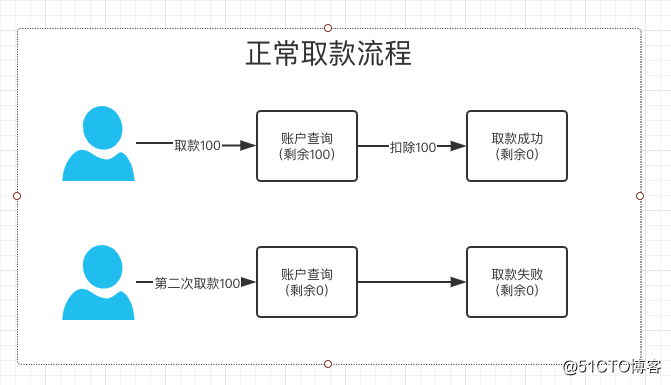
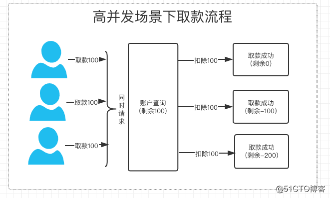
条件竞争安全漏洞解决方案
- 在程序处理时使用时序队列
- 在更新数据库数据时使用数据库锁（乐观锁）
- 针对数据库使用分布式锁
互联网金融的合规性的设计原则
合规、监管要求 在对互联网金融项目建设时，根据金融行业特性，必须在建设范围进行法律、法规的研讨和设计，确定要关注及合规部门银保监会的监控要求限制。
对于新的业务流程或不确定的业务规则，必须通过银行合规、法律部门等会签通过，确保系统遵循合规条件。法律法规的参考相关地址：
1）. 中国政府政策网页http://www.gov.cn/zhengce/zhengcewenjianku/index.htm 2）. 中华人民共和国公安部政策https://www.mps.gov.cn/n6557558/index.html 3）. 中华人民共和国国家知识产权局法规http://www.sipo.gov.cn/zcfg/index.htm 4）. 中国银行保险监督管理委员会http://www.cbirc.gov.cn/cn/view/pages/index/index.html
高并发消费金融架构重点指标的核心设计理念
在构建一个高并发金融架构时，我们往往会考虑很多因素，从系统平台建设的角度来讲，会优先关注以下重点指标的建设：
1）高可用 2）高并发 3）高性能 4）高弹性
互联网金融高可用设计原则
对于互联网金融架构系统来说，涉及到以资金交易为核心的业务领域，最重要的指标是高可用。
高可用HA（High Availability）是分布式架构设计中必须考虑的因素之一，它通常的是指，通过设计减少系统不能提供服务的时间。
高可用的指标 我们通常会形容高可用如：
- 不能“挂”
- 可用性99.99%四个九
- 一年故障时长0.876小时
- 平均响应时间<10ms，95线<50ms
- 全年数据故障不超过5次
- 全年系统100%可用
如何保证高可用
保障系统的高可用，有两大架构设计的原则：
- 多副本设计：
避免单点问题，对各个系统特别是涉及到交易、账务的核心系统进行多副本设计，对数据库进行多库备份和读写分离。如果有了多副本，在某个单点出问题时，副本可以发挥作用。架构设计以“集群化”的方式，保障架构的高可用。
- 自动故障转移：
在有了多副本的建设的前提下，前面已经说到，互联网金融的架构体系相比传统系统复杂度高，所以在系统出问题时，我们必须引入故障自动转移机制，避免手工和人工的干预，能够高效率的自动化的切换至副本服务或数据库。
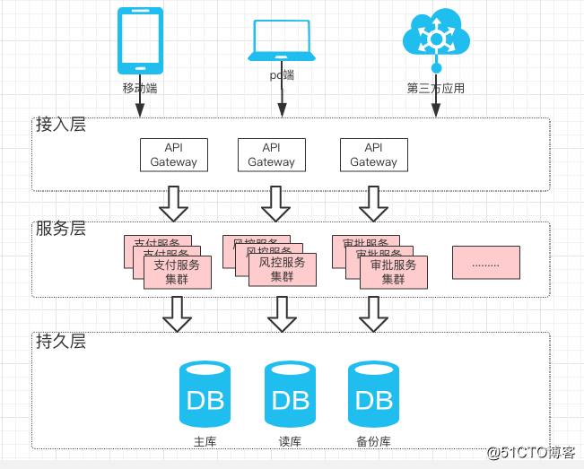
高可用服务网关建设 互联网金融的网关的建设，有以下好处：
- 对金融安全性方面把关，涉及到数据的加解密工作和身份认证鉴权工作；
- 对流量进行管控和切换，保障核心系统始终处于可用状态，对异常节点进行剔除；
- 限流降级异常流量拦截，保护核心系统。
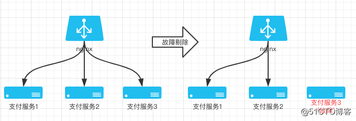
高可用数据库设计 在金融行业，数据的重要性不言而喻，为保障数据库的高可用，我们一般有：
- 读写分离设计；
- 主备库设计；
- 使用分布式数据库服务等。
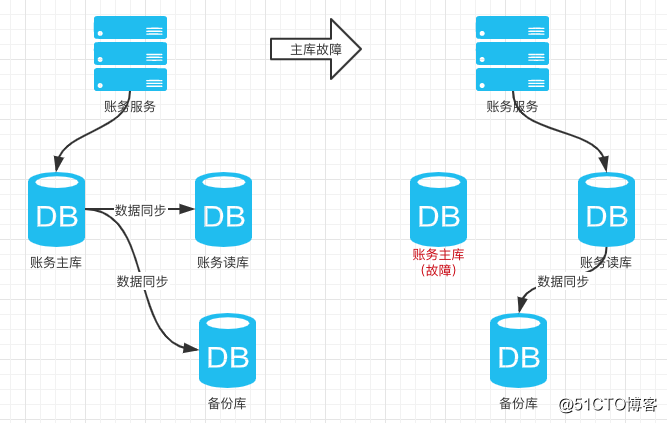
提到数据库的多副本设计，如读写分离和主备库设计，这就涉及到数据同步的问题了。同步的方式有很多，现在很多云服务厂商也提供了很多配套工具，进过封装之后的服务，可以傻瓜式的上手。 对于自建的服务来说，我们常常会考虑通过MQ（如RocketMQ）进行异步同步，或者解析MYSQL的binlog等方式进行数据同步。
互联网金融高并发设计
互联网金融的场景下，在高可用的基础上，对于高并发的要求是必不可少的。为满足日益剧增的用户增长和交易量，往往需要在架构设计时，考虑高并发的特性。
高并发的指标
我们通常会通过很多方式来衡量说明一个高并发系统的架构设计，如：
- 通过设计来保证系统能够同时处理很多的事情，比如亿级并发支付交易，百万级并发保单下单等
- 低响应时间：系统对请求作出的响应时间维持在一个较低的水平，通常不超过3秒。例如系统处理一个HTTP请求需要200ms，这个200ms就是系统响应时间。
- 高吞吐量：单位时间内处理的请求量。
- QPS：每秒响应请求数。在互联网领域，这个指标和吞吐量区分的没那么明显。
- TPS：每秒处理的事务数。
- 并发用户数：同时承载正常使用系统功能的用户数量。例如一个即时通讯系统，同时在线量一定程度上代表了系统的并发用户数。
如何提升系统的并发能力
1） 提升系统的单机处理能力
垂直扩展的方式有两种：
增强单机硬件性能，例如：增加CPU的核数，由8核扩展到16核；升级更好的网卡，由千兆网卡升级到万兆网卡；升级更好的硬盘，如SSD；扩展硬盘的容量，如由500G升级到10T；扩展系统内存，如由16G升级到64G等。
提升单机的架构性能，例如：引入缓存机制Redis来减少IO次数；引入消息队列机制，来削峰填谷，用异步处理来增加单服务的吞吐量；用轻量级架构来减少服务的处理时间等。
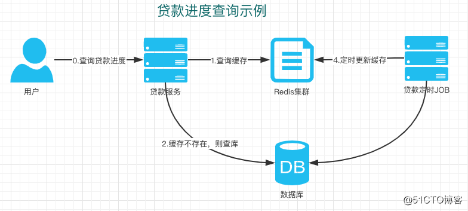
2）提升系统的横向扩展能力
系统单机的处理能力总是有极限的，我们可以通过增加服务器数量的方式，来线性扩充系统的性能。
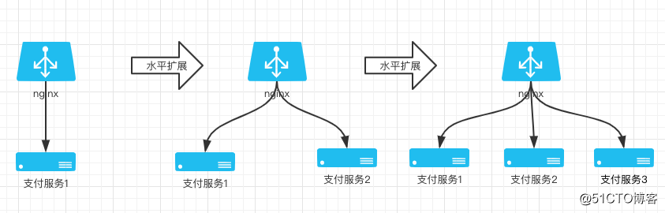
互联网金融高性能设计
在互联网金融分布式架构中，高性能是一项涉及众多方面因素的系统工程，并不是单一高新技术和设备的简单应用或堆叠，应该进行合理的规划与优化设计，以适合用户在性能、成本等方面对系统建设的综合需求。
高性能的指标
高性能的指标通常有：
1）通过合理的架构设计，实现互联网金融系统高吞吐、低延时（相对时间）。 2）可用性指标计算：平均相应时间、95线的响应时间、99线的响应时间。
如何提升系统的性能 互联网金融系统，涉及到各方面的性能问题，如：系统软件平台服务的性能，网络和硬件的性能，数据库及存储的性能等。
1）微服务化设计
将对庞大金融服务进行领域规划，将臃肿的系统进行拆分解耦，将每一个模块进行解耦，把每个服务都尽可能做成无状态化，每个独立模块均可以作为一个微服务，这样每个微服务的关联性都比较小，每一个微服务都可能做到最大化的性能。
备注：微服务技术和消费金融领域的规划，我们会在后面的章节再独立介绍。
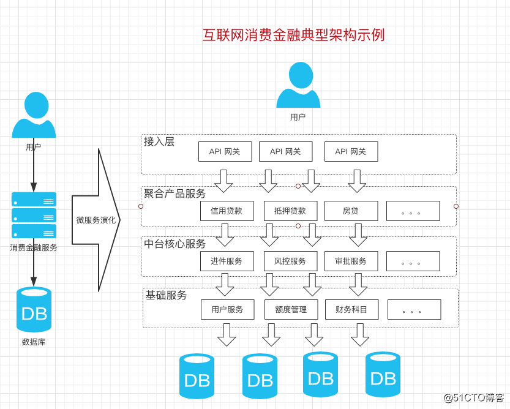
2）CDN加速技术
互联网消费金融的产品，涉及到众多前端，使用CDN缓存技术，能大大提升用户的产品体验。
CND加速将网站的内容缓存在网络边缘（离用户接入网络最近的地方），然后在用户访问网站内容的时候，通过调度系统将用户的请求路由或者引导到离用户接入网络最近或者访问效果最佳的缓存服务器上，由该缓存服务器为用户提供内容服务；相对于直接访问源站，这种方式缩短了用户和内容之间的网络距离，从而达到加速的效果。
3）网络与硬件性能
带宽性能：足够的带宽应该满足在网站峰值的情况还能足够快速的使用，所以网络带宽应该大于峰值流量=峰值QPS * 平均请求大小。只有在保证带宽的情况才能实现高性能服务。
服务器性能：服务器性能主要从CPU、内存和磁盘三个方面来考虑，CPU核心数量尽量多点，内存大小最好大一点，利用到磁盘存储的话SSD会优于机械磁盘。
硬件负载均衡设备对于有条件的团队可以采购硬件负载均衡设备，加强后台服务负载均衡的能力，比如F5。
4）分布式缓存
在互联网金融的高并发场景，引入缓存能够大大提升系统性能，减少数据库IO请求，从而降低核心数据库的并发压力。
一般来说，在系统横向扩展能力足够强的情况下，高并发的压力会打到数据库，所以分布式缓存的建设对于互联网消费金融产品架构设计来说非常重要。
缓存的本质是通过Key-Value形式的Hash表提升读写速度，一般情况是O（1）的读写速度。读量比较高，变化量不大的数据比较适合使用缓存。目前比较常用的分布式缓存技术有Redis，Memcache等。缓存这块的中间件建设，后面的章节会在细化讲解。
5）操作异步化设计
目前在大型的互联网消费金融系统架构设计中，普遍会考虑用消息队列来讲调用异步化，不仅可以提升系统的性能，还可以提升系统的扩展性。
对于大量的数据库写请求，数据库的压力很大，同时也会造成数据库的响应不及时。可以引入使用消息队列机制，数据库的写请求可以直接写入到消息队列，然后通过多线程或者多进程从消息队列读取数据慢慢写入到数据库。消息队列服务器的处理速度会远远快于数据库，所以用户在写入操作时会感觉到很快写入速度。
6）代码的优化
对于IO操作的请求可以采用基于状态机的异步化编程。如：
多线程模型 多进程模型 多协作模型 事件驱动模型
处理算法的模型优化（时间复杂度和空间复杂度），对于数据结构的设计可以采用高效的数据结构，比如典型的key-value缓存系统就是基于hash的基本原理来实现的，hash表的查询效率是O（1），效率极快。
7）高性能的本地存储设计
提供更高的存储硬件，更高的吞吐量和IPOS，读写性能。合理的数据连接池和缓存。
8）数据分片设计
在互联网消费金融领域，涉及到很多账务数据的处理，引入分片技术能大大提升数据处理的性能。
比如：借贷业务涉及到的借据数据、财务数据的夜间批量处理时，利用分片技术进行处理，提供了更高的扩展性，提升了整体的性能。
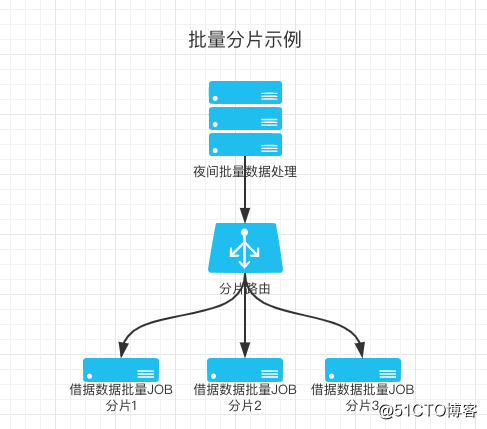
互联网消费金融高弹性架构设计
高弹性架构设计原则 互联网消费金融行业的架构设计中，高弹性涉及到众多技术面。主要有：
分布式高弹性架构 中间件平台高弹性支撑体系设计 分布式高弹性数据库建设 云计算基础设施架构
高弹性架构实践
1）单元化的拆分，让应用系统具备独立弹性能力
互联网消费金融架构设计时，考虑到的拆分涉及到两方面：
一是系统拆分，根据业务领域设计，把系统拆分解耦，让系统的颗粒度细化，模块化，微服务化。
二是数据拆分，对数据分而治之，减少单点数据故障的同时，又可以让每个数据模块具备高弹性能力。
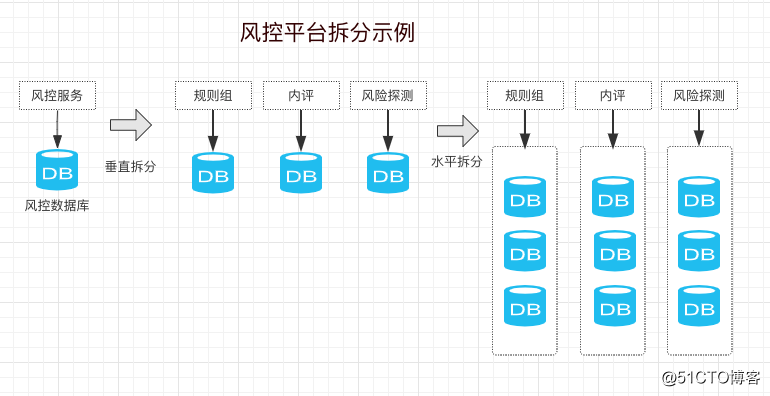
2）同城双活、异地多活建设，提高系统伸缩弹性
在互联网金融行业，数据和服务的重要程度都非常高，通常会通过建设同城双活、异地多活的架构，来提升系统的容错和伸缩能力。
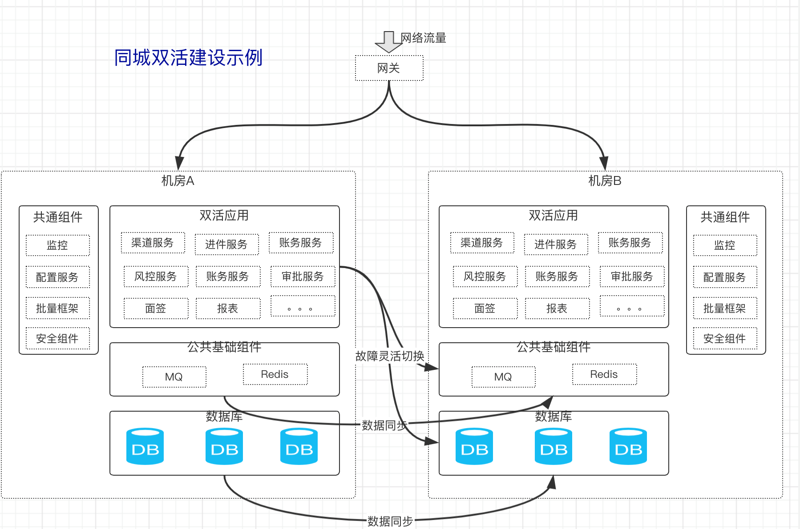
互联网消费金融高可测设计
1）自动化测试
前面的章节介绍到了互联网消费金融的软件架构的拆分与微服务建设，服务在我们的领域规划下变得有调理，服务越来越多，越来越细化，给测试也带来了巨大的挑战。进行高可测的架构设计时，我们对自动化测试的依赖越来越强，因为自动化测试能我们带来很大便利：
1）运用自动化环境，实现一次性部署测试环境，一键测试； 2）方便对程序的回归测试； 3）可以运行更多更繁琐的测试； 4）可以执行一些手工测试困难的测试； 5）测试具有一致性和可重复性； 6）增加软件信任度； 7）释放测试资源，提升测试人员能力等。
常用的自动化建设，一般分为前端页面的自动化测试，和接口的自动化测试。比较流行的工具有：appium，selenium，httprunner，loadrunner等。有能力的企业会自主研发自动化框架，加入更多定制化的功能，以满足实际的业务需要。
2）性能测试问题和解决方案
互联网消费金融业务复杂度高，面对性能测试往往会遇到诸多问题。
性能测试的场景多，业务复杂，比如支付功能可能涉及到从发起支服务的业务服务，到支付网关，在到银行内部系统等五六个服务。
解决方案：对关键业务路径进行性能回归，对单个服务接口进行压测和预估。
测试环境服务器和线上服务器的配置往往不一样，而且测试环境是单点的，而线上服务是集群的。
解决方案： a. 机房单台服务器配置尽量与线上保持一致，集群问题通过等比缩放预估； b. 技术力量比较强的公司如阿里，直接在线上环境进行压测。
测试数据准确性和一致性问题 解决方案：对生产数据进行全量脱敏导下来，用于性能测试
接口的性能测试调用链太长，对外部系统依赖 解决方案：接口的调用链尽量优化简短，部分接口和外部依赖进行mock后再测试。
性能测试方案制定，怎样定位性能瓶颈？ 解决方案：需要对被压测的接口分析调用链，根据线上监控，进行分析可能存在的性能瓶颈。
QPS应该跑多少？ 根据接入的接口监控，比如cat监控，可以根据监控数据QPS/集群数，再乘以80%（因为测试服务器和线上服务器的性能可能有一些差距）。
相应时间以多少为准？ 接口理论上相应时间是100-800ms，最大不超过1s。这是基本要求，一些特殊重场景，需特殊处理。
压测结果应怎样预估？ 根据测试环境压测结果（cpu<=50%）简单预估，测试QPS线上集群1.2 约等于线上QPS